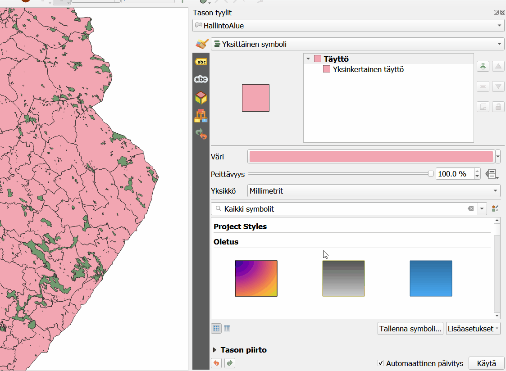
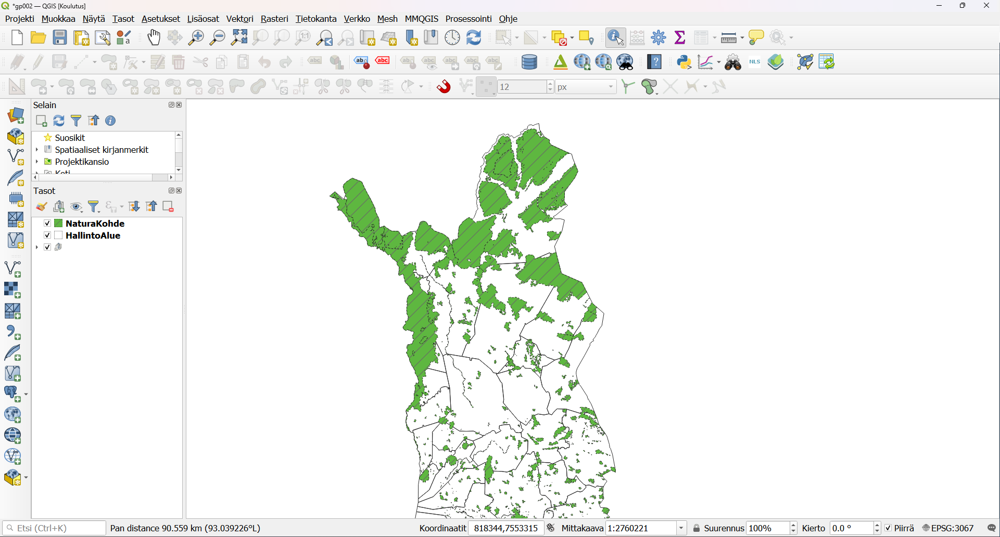
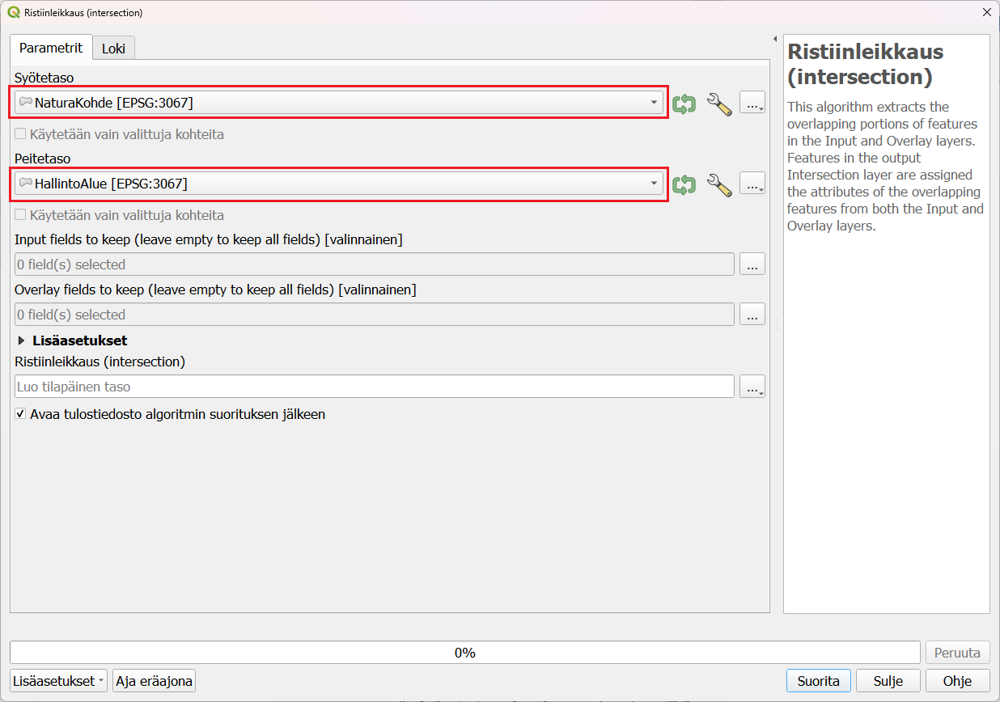
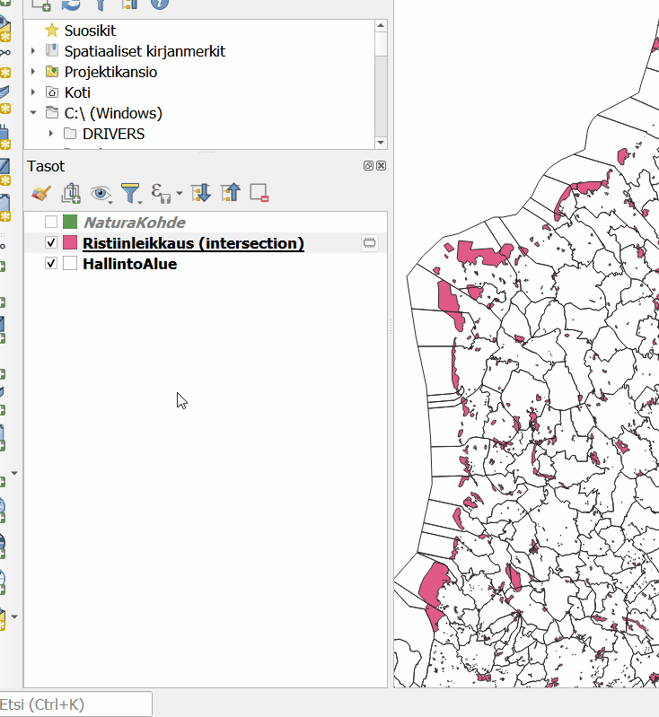
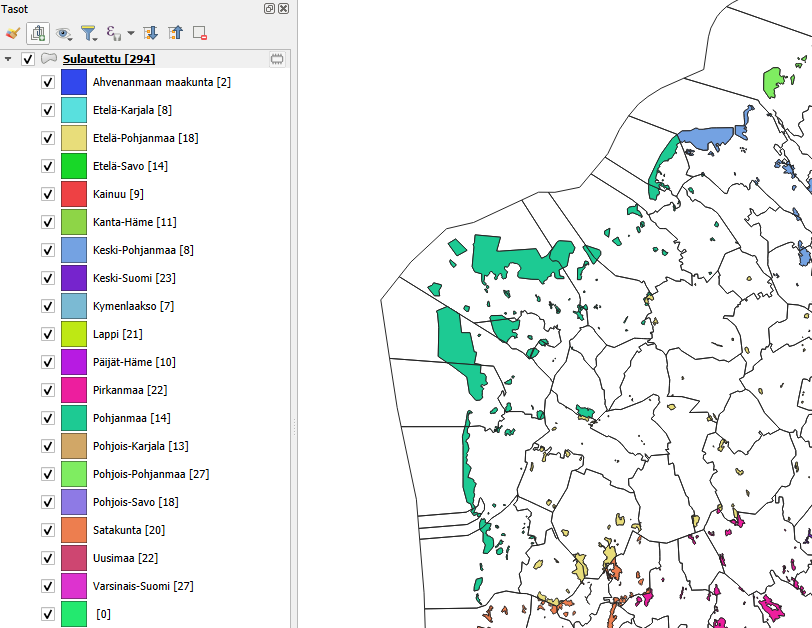
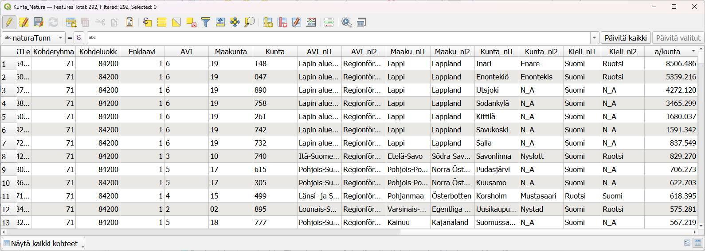

8 Harjoitus 7: Paikkatietoanalyysit
8.1 Harjoituksen sisältö
Harjoituksessa tutustutaan QGISin erilaisiin paikkatietoanalyyseihin.
8.2 Harjoituksen tavoite
Koulutettava oppii käyttämään eri aineistoille tarkoitettuja paikkatietoanalyysejä tarkoituksenmukaisesti.
8.3 Valmistautuminen
Luo uusi QGIS-projekti ja tallenna se nimellä (Projekti → Tallenna nimellä…) “QGIS_harjoitus_7”. Lisää projektiin seuraavat tasot:
…/Harjoitus 7/HallintoAlue.shp
…/Harjoitus 7/NaturaKohde.shp
Voit asettaa HallintoAlue-monikulmion täytevärin pois ja saada siten NaturaKohde-aineiston paremmin näkyviin:

Karttanäkymä näyttää nyt kunkin väriasetuksia lukuunottamatta tältä:

Tarkista projektisi koordinaattijärjestelmän asetukset Projekti → Ominaisuudet → Koordinaattijärjestelmä -välilehdessä tai klikkaamalla QGISin oikeasta alareunasta, jossa on kirjaimet EPSG ja nelinumeroinen koodi.

Molemmilla tavoilla saat auki projektin koordinaattijärjestelmän määrityslomakkeen. Tarkista, että järjestelmä on ETRS89 / ETRS-TM35FIN. Muista, että voit lisätä ongelmitta projektiisi aineistoja eri karttaprojektioissa. Voit tarkistaa myös tasojesi koordinaattijärjestelmän valitsemalla avaamalla tason ominaisuudet ja valitsemalla Informaatio tai Lähde välilehden. Kummastakin löydät aineiston koordinaattijärjestelmän. Monet analyysityökalut eivät toimi jos analyysin lähtöaineistot eivät ole samassa koordinaattijärjestelmässä.
Huomautus GK-koordinaatiston EPSG-koodeista!
Suomalaiset koordinaattijärjestelmät (vanhat ja uudet) ovat pääosin hyvin tuettuina QGIS-ohjelmistossa. On kuitenkin huomautettava, että EPSG-määrittelyissä on lievää epäjohdonmukaisuutta. Esimerkiksi tarkemmat GK-koordinaattijärjestelmän koodit löytyvät EPSG:n luettelosta kahteen kertaan: EPSG:3126 – EPSG:3138 koodeilla löytyvät koordinaattijärjestelmät ETRS-GK19FIN - ETRS-GK31FIN. Nämä ovat kuitenkin “virheellisiä”, keskimeridiaanin koordinaatti on aina 500 000.
OIKEAT EPSG-koodit: EPSG:3873 - EPSG:3885
VIRHEELLISET EPSG-koodit: EPSG:3126 - EPSG:3138
8.4 Vektorianalyysit
Tässä harjoituksessa selvitetään Natura-alueiden pinta-ala kunnittain. Lyhyesti harjoituksen kulku on:
- Tehdään spatiaalinen analyysi kunta- ja Natura-aineiston kanssa, jossa leikataan Natura-alueet kunnittain, jotta Natura-alueisiin saadaan kunta-aineiston sisältämät tiedot
- Yhdistetään Natura-alueet kunnittain ja lasketaan niiden pinta-ala
Seuraavaksi lähdemme käsittelemään aineistoja Vektori-ylämenusta, josta löytyvät ensisijaiset työkalut vektorianalyysien toteuttamiseen:

Käynnistä Ristiinleikkaus (intersection…)-työkalu Geoprosessointi-valikosta.
Määrittele syötetasoksi NaturaKohde ja leikkaavaksi tasoksi HallintoAlue-aineisto. Aineistossa voi olla geometriavirheitä, joten suodatetaan ne pois analyysista. Paina syötetason vierestä Asetukset  ja valitse Invalid feature filtering asetukseksi “Skip (Ignore) features with invalid geometries.Näin analyysi ei lopu, vaikka aineistossa on virheellisiä kohteita.
Teemme tälle aineistolle vielä toisen analyysin, joten voit luoda tilapäisen tason:
ja valitse Invalid feature filtering asetukseksi “Skip (Ignore) features with invalid geometries.Näin analyysi ei lopu, vaikka aineistossa on virheellisiä kohteita.
Teemme tälle aineistolle vielä toisen analyysin, joten voit luoda tilapäisen tason:

Suorita analyysi painamalla Suorita ja paina sen jälkeen Sulje. Analyysi luo uuden väliaikaisen tulostason nimeltä Ristiinleikkaus (intersection). Karttaikkunassa aineisto näyttää samalta kuin alkuperäinen aineisto.
Vertaile tasojen (NaturaKohde ja Ristiinleikkaus (intersection)) ominaisuustietoja. Mitä huomaat? Voit aktivoida myös Näytä kohteiden lukumäärä -toiminnon (paina hiiren oikealla näppäimellä tason nimen päällä Tasoluettelossa) katsoaksesi onko aineiston lukumäärä sama.
Analyysin tuloksena ristiinleikatussa aineistossa tulisi olla enemmän kohteita ja ominaisuustietotaulukossa HallintoAlue-aineiston sarakkeet lisänä.

Koska saman kunnan alueella voi olla usempia eri Natura-alueita, seuraavaksi siis yhdistämme eri kuntien alueella olevat alueet Sulauta-työkalun avulla. Valitse työkalu Vektori → Geoprosessointi → Sulauta.
Valitse syötetasoksi aiemmin tehty Ristiinleikkaus-taso ja valitse sulautuksen perusteena oleva sarake painamalla Dissolve fields kohdasta  .
Valitse ja laita täppä Kunta sarakkeeseen ja paina oikealta OK.
Sarakkeen pitäisi tulla harmaana Dissolve fields valinnaksi.
.
Valitse ja laita täppä Kunta sarakkeeseen ja paina oikealta OK.
Sarakkeen pitäisi tulla harmaana Dissolve fields valinnaksi.

Paina Suorita ja sitten Sulje. Tarkista taas kuinka paljon aineistossa on kohteita. Voit myös visualisoida aineiston esimerkiksi maakunnittain avaamalla kuvaustekniikan ja valitsemalla symbolin tyypiksi Luokiteltu, vaihda arvokenttään “Maaku_ni1” ja paina alareunasta Luokittele ja OK.

Lopuksi voimme laskea, kuinka monta neliömetriä kullakin kunnalla on suojeltu Natura-alueena. Avaa sulautetun tason ominaisuustietotaulukko ja laita taso editoitavaksi. Avaa Kentän arvojen laskin-työkalua. Luo uusi kenttä, jossa on kunnan Natura-alueiden pinta-ala neliökilometreinä $area funktion avulla.Voit antaa kentän tyypiksi desimaalinumero (reaali). Voit laskea pinta-alan neliökilometreinä jakolaskun avulla jakamalla funktion 1 000 000.
Missä kunnassa tai maakunnassa on eniten suojeltuja alueita?

Psst! Muista tallentaa QGIS-projekti harjoituksen lopuksi.